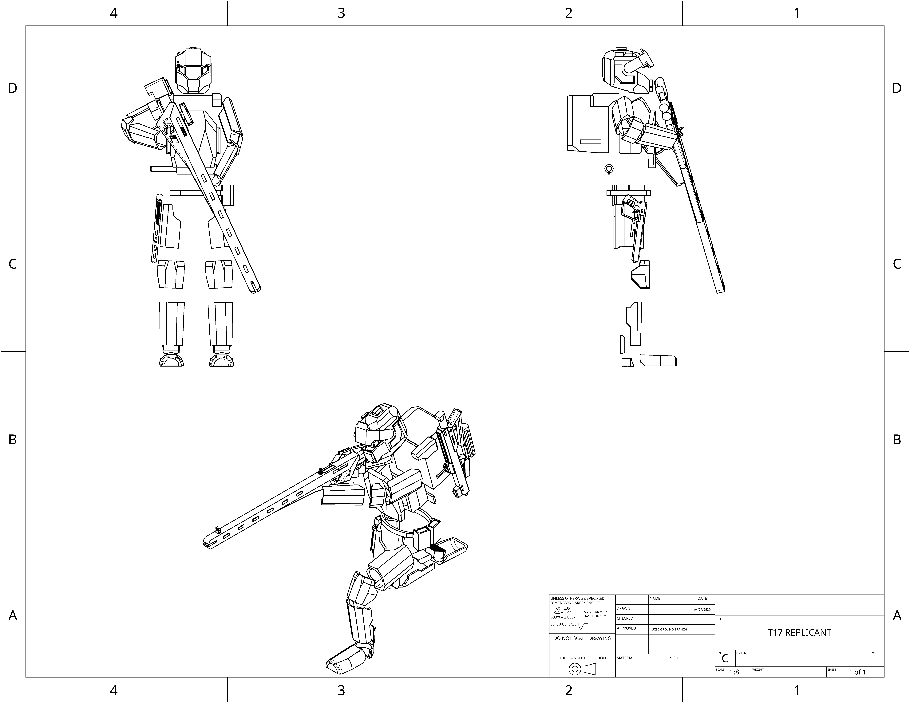

More often than not the first clones deployed to the battlefield. Will come equiped with some form long range weaponry or personal defence weapon. Often carry Terminal Data exfil and Exploit packages.
| Equipment: |
|---|
| SAR - .40 |
| CLG - .50 |
| 40mm VLSM |
| PDW - 6.5 |
| 6.5 Nano |
| .375 snub rail |
| M140 EMBR |